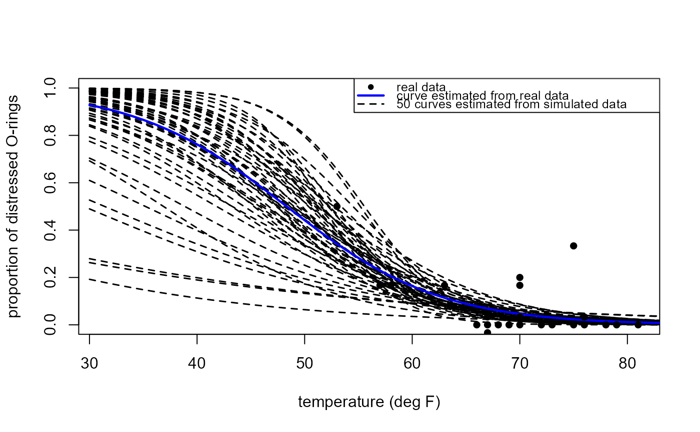

R/shuttle_sim.R
shuttle_sim_plot.RdIllustrates the uncertainty in the fitted values of the probability
of O-ring distress for different values of temperature, based on the
linear logistic regression model fitted to the real data.
Fake data from this fitted model are simulated repeatedly using
the function shuttle_sim. The linear logistic model
is fitted to each of these simulated datasets.
A plot is produced containing the real proportions of distressed
O-rings, the logistic curve fitted to the real data and each of the
logistic curves fitted to the fake data.
shuttle_sim_plot(
n_sim = 50,
plot_real_data = TRUE,
n_reps = 1,
plot = TRUE,
...
)An integer scalar. The number of fake datasets to simulate, and hence the number of curves from simulated data to appear in the plot.
A logical scalar. Should we add to the plot the
real data and the linear logistic curve fitted to the real data?
real_data = TRUE for ``yes'' and real_data = FALSE
for ``no''.
An integer scalar. The number of flights to simulate
for each of the 23 (pre-disaster) temperatures in the real dataset.
For example, n_reps = 10 means that we simulate a dataset of
size 230.
A logical scalar indicating whether or not to produce the plot.
Further arguments to be passed to the lines function
used to draw the curves for the simulated datasets.
A numeric matrix with 2 columns and n_sim rows.
Each row contains the estimates of the parameters of the linear
logistic regression model fitted to a simulated dataset.
The first column, alpha_hat, contains the estimates of the
intercept parameter, the second column, beta_hat,
the estimates of the slope parameter.
For details of the linear logistic model see
Challenger Space Shuttle Disaster
vignette and for simulation from this model see
shuttle_sim.
The Challenger Space Shuttle Disaster vignette.
shuttle_sim for simulating fake space shuttle data.
lines for arguments that can be supplied in ....
shuttle_sim_plot(n_sim = 50)
